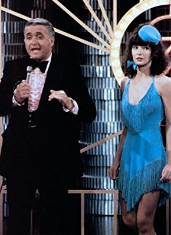

Meine Filme
Darsteller Robert Ridgely 

| 836 | Beverly Hills Cop 2 | 1987 | 12 | 100 | 1080p | 6.5 / 10  | Action | |
| 9359 | Höhenkoller | 1977 | 94 | 1080p | 6.7 / 10 | Komödie | ||
| 9736 | Kung Fu | 1972 | 71 | SD | 7.8 / 10 | Drama | ||
| 1779 | Leben Stinkt, Das | 1991 | 12 | 92 | 1080p | 5.8 / 10 | Komödie | |
| 2448 | Philadelphia | 1993 | 12 | 125 | 1080p | 7.7 / 10 | Drama | |
| 8387 | That Thing You Do! | 1996 | 6 | 107 | 1080p | 6.9 / 10 | Drama |